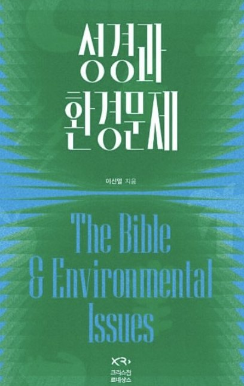

11월에 함께 읽은 책
성경과 환경문제
2026년 11월 한 달간, 매주 수요일 저녁 9시,
함께 읽고, 느낀 점을 나누고, 함께 기도했어요!
창조에서 시작해 지속 가능한 내일까지, 네 번의 모임을 카드로 다시 읽습니다.
1주차11월 첫째 주
1장 환경과 창조 · 2장 창세기와 환경
창조의 질서 안에 놓인 환경
환경을 ‘창조’의 눈으로 다시 보고, 창세기 1–3장과 홍수 이야기 속에서 환경의 구성요소와 그 변화를 따라갑니다.
2주차11월 둘째 주
3장 시편·욥기와 환경 · 4장 신약 성경과 환경
노래하는 피조물, 회복될 만물
시편 104편과 욥기 38–39장이 그리는 자연, 그리고 신약이 말하는 창조와 구원·만물의 회복을 함께 읽습니다.
3주차11월 셋째 주
5장 기후 위기 · 6장 인류세란 무엇인가
뜨거워지는 지구, 인간의 시대
지구온난화와 기후 정의, 그리고 ‘인류세’를 둘러싼 에코모더니즘·인간 중심주의·심층 생태주의의 논쟁을 살펴봅니다.
4주차11월 넷째 주
7장 동물 · 8장 환경과 미래
돌봄으로서의 다스림, 지속 가능한 내일
가축·반려동물·농장동물을 둘러싼 문제와 성경이 말하는 동물, 그리고 지속 가능한 세계를 향한 생태학적·성경적 고찰을 나눕니다.